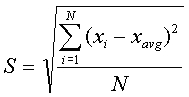

Before you can write your program, you need to have some background
information on how an image is made. An image is made up of blocks
called pixels. Usually, when we refer to an image as an n by m (n*m) image,
we mean that there are n rows and m columns of pixels in that image. Thus,
n pixels in each column and m pixels on each row. That makes n*m pixels
all together. In a greyscale image, every pixel has a value between
0 to 255. The black color is represented with a pixel value of 0 and the
white color with a pixel value of 255. Different shades of grey are
made by selecting a number in the range 0 to 255, a pure grey is 127 (50%
black and 50% white). Following is an example of a 4x4 image (4 pixels
on each column and 4 on each row). Please note that all pixels
are squares of the same size, some browsers may show the pixels on the
sample image in a different size, but in the actual image, all pixels appear
with the same size.
| 0 | 0 | ||
| 0 | |||
| 0 | |||
| 0 |
The pixel values on this 4x4 image are:
0 255
0 255
255 127
255 0
0 255
160 255
255 86
255 0
To generate this image simply create a file called img1.ppm and
type the following 8 lines iin it:
P3
# This a sample 4x4 image
4 4
255
0 255 0 255
255 127 255 0
0 255 160 255
255 86 255 0
In this image, the first 4 lines define the format and characteristics
of the image, in brief:
P3 // Is the standard P3
PGM format
# This a sample 4x4 image
// any comments
4 4 // number of rows
and columns
255 // maximum grey level
observed
Once you saved the file then you can view it using an imaging software, such as xv, Paint Shop Pro, or Adobe Photo Shop. Note that since this image is very small, you may enlarge the view (zoom in) to see the details. You also can use the imaging software to convert images that are in other formats to pgm format.
Your assignment is to read an image, to display some statistics on that image, and to create its invert . The inverse of white color is black and the inverse of a black color is white. So you need to convert all the pixels of the 2-D array representing the image based on this scheme. Your program must be flexible, thus correctly works for images of different size. Here is a sample 8 by 8 image samp_img.pgm.
Here is the list of functions you are required to use, but you are welcome to use any additional functions.
invert : This function will take the array representing the image
and will invert its pixels. You basically use the following formula to
invert a single pixel:
invert of x = |255 -x|. For example if a pixel on the original
image has the value of 255 after we invert it, it will become 0, a pixel
with pixel value of 80 will be converted to 255 – 80 = 175.
The inverted image will be written into a new file, img_invert.ppm.
Please note that the first four lines of the input image must be written
into the inverted
image without any change. So you need to copy these four lines from
the original image file to the inverted image.
avrg_row: This function will take the average of each row and
will write the result into the OutData file in the following format:
Avg Row (1) :???
Avg Row (2) :???
avrg_column: This function will take the average of each column
and will write the result into the OutData file in the following format:
Avg Col (1) :???
Avg Col (2) :???
…..
avrg_image: This function will compute the average of the input
image and will write the result into the output file OutData.
Avg Pixel: ???
std_image: This function computes the standard deviation of the image based on the following formula:

in which xi is the individual pixel value, xavgis the mean (average) of all pixels, and N is the total number of pixels in that image.
distribution: This function will compute and write the following 6 values into the output file OutData:
Average + 1 STD: ???
Average – 1 STD: ???
Average + 2 STD: ???
Average – 2 STD: ???
Average + 3 STD: ???
Average – 3 STD: ???